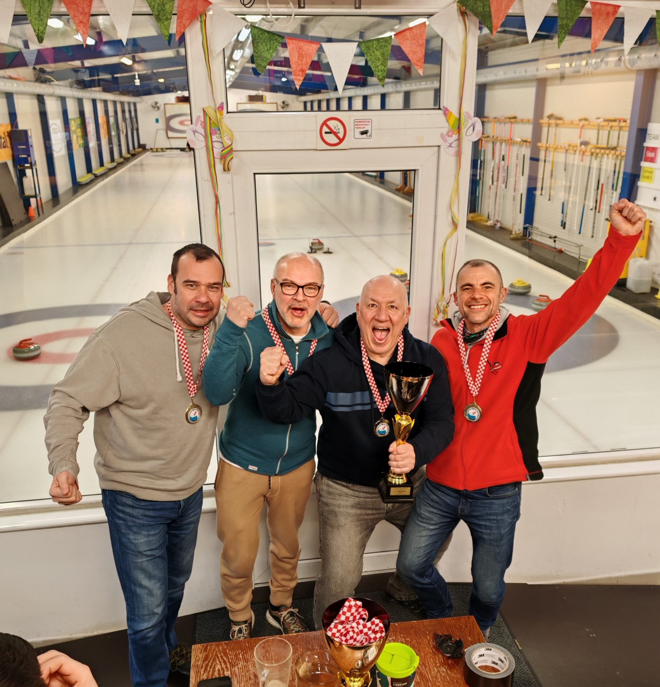

22. i 23. veljače 2025. godine u Budimpešti, Mađarska održano je 19. PH za muškarce i 17. PH za žene.
U muškoj konkurenciji je nastupilo pet ekipa:
Legija Zagreb u sastavu: Hrvoje Tolić, Ante Baus, Bruno Samardžić, Vedran Horvat, Mirolsav Jurković i trener Nandor Miklos
Vis u sastavu: Alberto Skendrović, Bojan Gabrić, Davor Džepina i Ivan Kapović
Sisak u sastavu: Dino Šporčić, Dario Vuković, Anton Malović i Salem Velić
Čudnovati Čunjaš 1 u sastavu: Ivan Kolar, Marko Stokuća, Ognjan Šolaja i Siniša Halkijević
Čudnovati Čunjaš 2 u sastavu: Sven Prinčić, Krešimir Valečić, Filip Meden i Neven Pufnik
Prvak Hrvatske u muškoj konkurenciji u sezoni 2024-2025 je ekipa Curling kluba Vis.
U ženskoj konkurenciji su nastupile dvije ekipe:
Čudnovati Čunjaš u sastavu: Luči Ana Pavelka, Paula Princip, Jelena Bukvić i Morana Ćuzela
Silent u sastavu: Marijana Barišić, Maja Sertić, Vanja Živković, Melani Turković i Emina Crnaić
17. prvak Hrvatske u ženskoj konkurenciji u sezoni 2024-2025 je ekipa Curling kluba Silent.